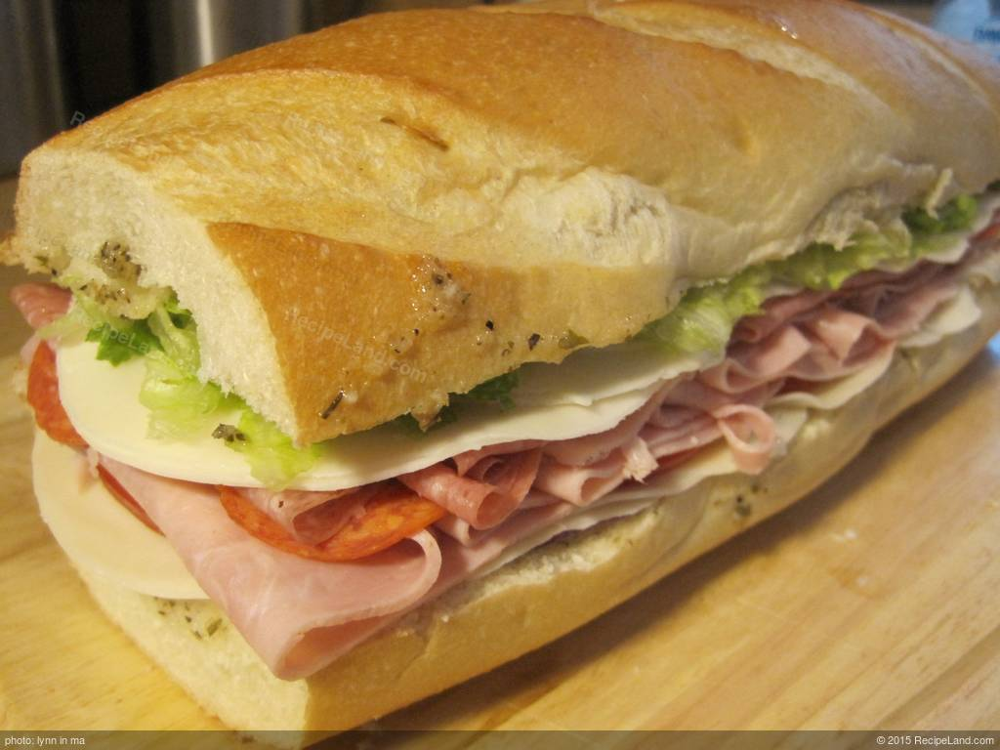

This Italian sub sandwich is a perfectly serviceable sandwich for when you are too focused coding for too long to make a more quality meal. Don't let that put you off though this sandwich is made with only quality ingredients and is bound to make it into your regualar rotation.
